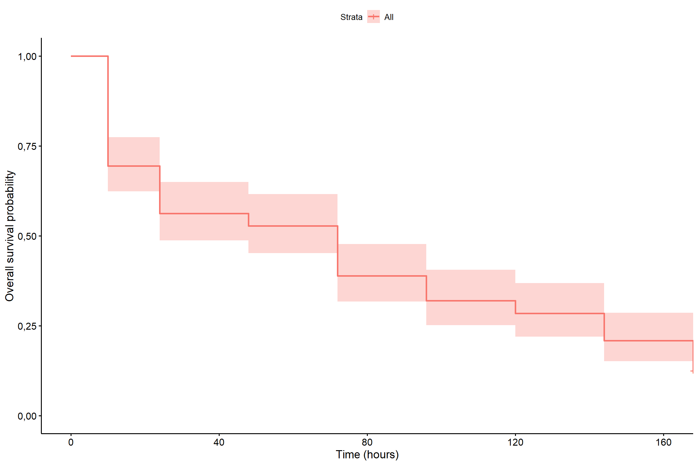
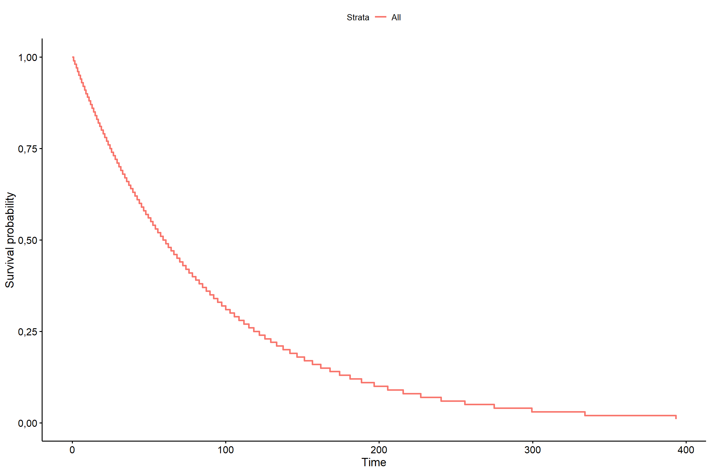
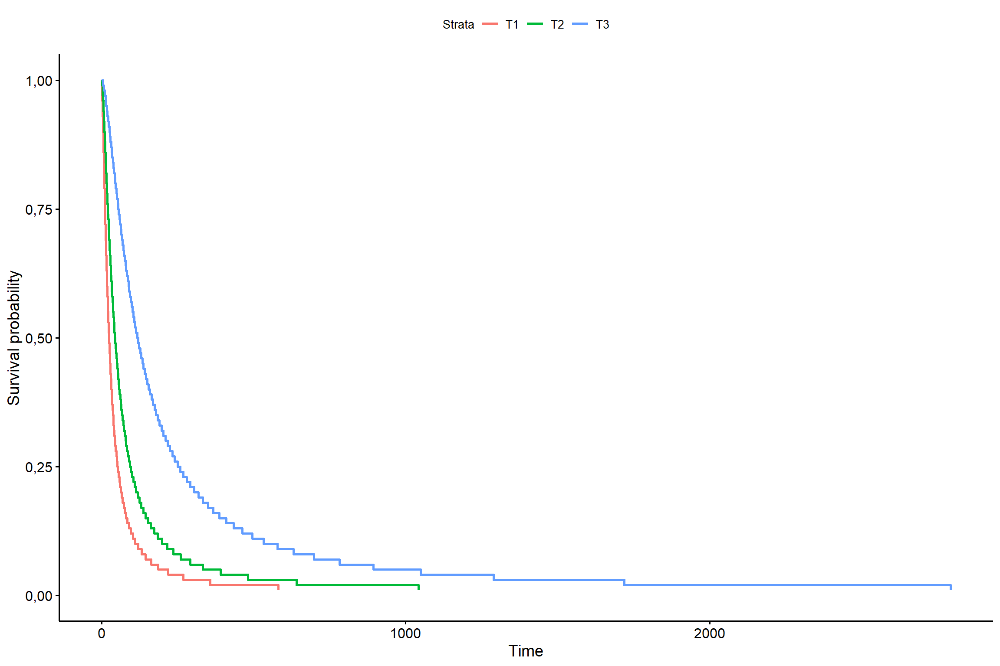
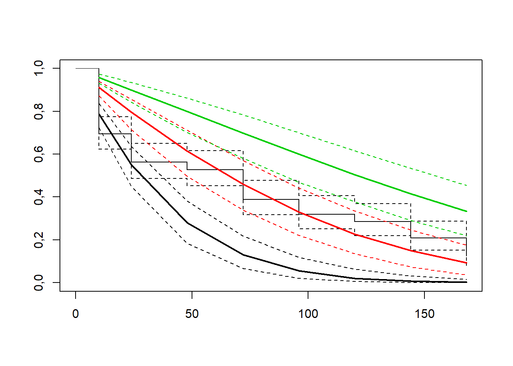
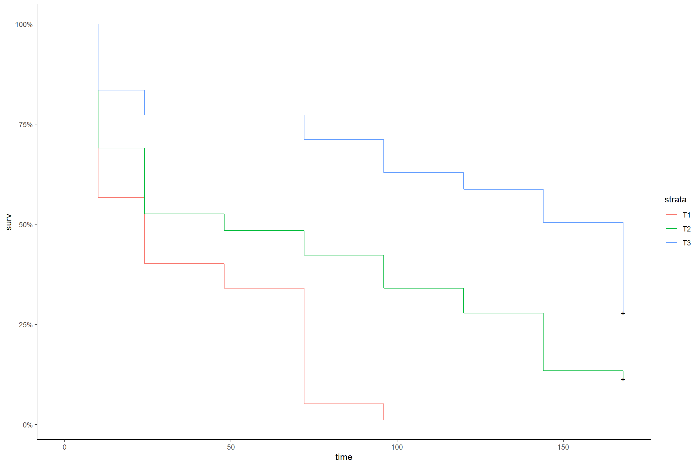

21 Análise de sobrevivência

Análise de sobrevivência, também denominada análise de sobrevida, é um ramo da estatística que estuda o tempo de duração esperado até a ocorrência de um ou mais eventos, tais como morte em organismos biológicos ou falha em sistemas mecânicos. Na agronomia, tem sido bastante utilizada na avaliação residual de produtos fitossanitários em insetos, tempo até a morte em função de um doença, etc.
21.1 Conjunto de dados
O conjunto de dados é de um experimento cujo objetivo é avaliar a mortalidade de insetos em função de alguns produtos comerciais.
tempo=c(10,10,10,10,10,10,10,24,24,24,24,48,10,10,10,10,10,10,10,10,10,10,10,10,24,24,48,48,72,72,72,72,72,72,72,72,10,10,24,24,72,72,72,72,72,72,96,96,10,10,10,48,96,96,144,144,168,168,168,168,10,10,24,24,72,72,72,96,96,120,168,168,10,10,10,10,10,10,10,24,24,24,24,48,10,10,10,24,24,120,120,144,144,144,144,144,10,10,144,144,168,168,168,168,168,168,168,168,24,72,96,96,120,144,168,168,168,168,168,168,24,72,96,120,144,168,168,168,168,168,168,168,10,10,10,10,10,10,24,72,96,168,168,168)
# criando vetor de status (Ocorreu ou nao o evento)
status=c(1,1,1,1,1,1,1,1,1,1,1,1,1,1,1,1,1,1,1,1,1,1,1,1,1,1,1,1,1,1,1,1,1,1,1,1,1,1,1,1,1,1,1,1,1,1,1,1,1,1,1,1,1,1,1,1,0,0,0,0,1,1,1,1,1,1,1,1,1,1,1,0,1,1,1,1,1,1,1,1,1,1,1,1,1,1,1,1,1,1,1,1,1,1,1,1,1,1,1,1,1,1,1,1,0,0,0,0,1,1,1,1,1,1,1,0,0,0,1,0,1,1,1,1,1,1,1,1,1,0,0,0,1,1,1,1,1,1,1,1,1,1,0,0)
trat=rep(c("T1","T2",'T3'),e=48)
dados=data.frame(trat,tempo,status)
21.3 Método não-paramétrico de Kaplan-meier
21.3.1 Sem considerar tratamentos
Somente uma análise exploratória geral
library(survival)
library(survminer)
KM <- survfit(Surv(tempo,status) ~ 1, type="kaplan-meier")
summary(KM)## Call: survfit(formula = Surv(tempo, status) ~ 1, type = "kaplan-meier")
##
## time n.risk n.event survival std.err lower 95% CI upper 95% CI
## 10 144 44 0,694 0,0384 0,6231 0,774
## 24 100 19 0,562 0,0413 0,4870 0,650
## 48 81 5 0,528 0,0416 0,4522 0,616
## 72 76 20 0,389 0,0406 0,3169 0,477
## 96 56 10 0,319 0,0389 0,2517 0,405
## 120 46 5 0,285 0,0376 0,2198 0,369
## 144 41 11 0,208 0,0338 0,1515 0,286
## 168 30 12 0,125 0,0276 0,0811 0,193ggsurvplot(
fit = survfit(Surv(tempo, status) ~ 1),data=dados,
xlab = "Time (hours)",
ylab = "Overall survival probability")
21.3.2 Tempo médio de sobrevivência
## *rmean
## 33,2222221.3.3 Considerando tratamentos
21.3.4 Conferindo diferenças par a par
| T1 | T2 | |
|---|---|---|
| T2 | 0,0003111 | |
| T3 | 0,0000000 | 0,0006521 |
Todos diferem entre si
21.4 Modelo paramétrico
21.4.1 Distribuição exponencial
21.4.2 Sem considerar tratamentos
##
## Call:
## survreg(formula = Surv(tempo, status) ~ 1, dist = "exponential")
## Value Std. Error z p
## (Intercept) 4,4473 0,0891 49,9 <2e-16
##
## Scale fixed at 1
##
## Exponential distribution
## Loglik(model)= -686,4 Loglik(intercept only)= -686,4
## Number of Newton-Raphson Iterations: 4
## n= 144s <- seq(.01, .99, by = .01)
t_0 <- predict(KM, newdata = data.frame(trat=paste("T1","T2","T3")),
type = "quantile", p = s)
smod <- data.frame(time = c(t_0), # acrescentar os tratamentos
surv = rep(1 - s, times = 1), # mudar o times
upper = NA, lower = NA)
ggsurvplot(smod) 
21.4.3 Considerando tratamentos
library(survival)
library(survminer)
KM2 <- survreg(Surv(tempo,status) ~ trat, dist="exponential")
summary(KM)##
## Call:
## survreg(formula = Surv(tempo, status) ~ 1, dist = "exponential")
## Value Std. Error z p
## (Intercept) 4,4473 0,0891 49,9 <2e-16
##
## Scale fixed at 1
##
## Exponential distribution
## Loglik(model)= -686,4 Loglik(intercept only)= -686,4
## Number of Newton-Raphson Iterations: 4
## n= 144## Df Deviance Resid. Df -2*LL Pr(>Chi)
## NULL NA NA 143 1372,722 NA
## trat 2 44,24522 141 1328,477 2,467593e-10s <- seq(.01, .99, by = .01)
t_0 <- predict(KM2, newdata = data.frame(trat = "T1"), type = "quantile", p = s)
t_1 <- predict(KM2, newdata = data.frame(trat = "T2"), type = "quantile", p = s)
t_2 <- predict(KM2, newdata = data.frame(trat = "T3"), type = "quantile", p = s)
smod <- data.frame(time = c(t_0, t_1, t_2), # acrescentar os tratamentos
surv = rep(1 - s, times = 3), # mudar o times
strata = rep(c("T1", "T2", "T3"), each = length(s)),
upper = NA, lower = NA)
ggsurvplot(smod) 
21.5 Distribuição gaussiano
21.5.1 Sem considerar tratamentos
##
## Call:
## survreg(formula = Surv(tempo, status) ~ 1, dist = "gaussian")
## Value Std. Error z p
## (Intercept) 78,8982 5,9303 13,3 <2e-16
## Log(scale) 4,2519 0,0652 65,2 <2e-16
##
## Scale= 70,2
##
## Gaussian distribution
## Loglik(model)= -735,6 Loglik(intercept only)= -735,6
## Number of Newton-Raphson Iterations: 5
## n= 14421.5.2 Considerando tratamentos
##
## Call:
## survreg(formula = Surv(tempo, status) ~ trat, dist = "gaussian")
## Value Std. Error z p
## (Intercept) 36,3750 8,5829 4,24 2,3e-05
## tratT2 37,3906 12,1867 3,07 0,0022
## tratT3 89,7879 12,3737 7,26 4,0e-13
## Log(scale) 4,0854 0,0649 62,96 < 2e-16
##
## Scale= 59,5
##
## Gaussian distribution
## Loglik(model)= -712,5 Loglik(intercept only)= -735,6
## Chisq= 46,23 on 2 degrees of freedom, p= 9,2e-11
## Number of Newton-Raphson Iterations: 4
## n= 144## Df Deviance Resid. Df -2*LL Pr(>Chi)
## NULL NA NA 142 1471,295 NA
## trat 2 46,22645 140 1425,069 9,163355e-11t_0 <- predict(KM3, newdata = data.frame(trat = "T1"), type = "lp")
t_1 <- predict(KM3, newdata = data.frame(trat = "T2"),type = "lp")
t_2 <- predict(KM3, newdata = data.frame(trat = "T3"),type = "lp")
x_grid <- 1:400
sur_curves <- sapply(t_0, function(x)survreg.distributions[[KM3$dist]]$density((x - x_grid)/KM3$scale)[, 1])
sur_curves1 <- sapply(t_1, function(x)survreg.distributions[[KM3$dist]]$density((x - x_grid)/KM3$scale)[, 1])
sur_curves2 <- sapply(t_2, function(x)survreg.distributions[[KM3$dist]]$density((x - x_grid)/KM3$scale)[, 1])
matplot(x_grid, sur_curves, type = "l", lty = 1,ylim=c(0,1))
lines(x_grid,sur_curves1,col="red")
lines(x_grid,sur_curves2,col="blue")
21.6 Distribuição logistico
21.6.1 Sem considerar tratamentos
##
## Call:
## survreg(formula = Surv(tempo, status) ~ 1, dist = "logistic")
## Value Std. Error z p
## (Intercept) 72,5020 6,3768 11,4 <2e-16
## Log(scale) 3,7594 0,0722 52,0 <2e-16
##
## Scale= 42,9
##
## Logistic distribution
## Loglik(model)= -739,5 Loglik(intercept only)= -739,5
## Number of Newton-Raphson Iterations: 5
## n= 14421.6.2 Considerando tratamentos
##
## Call:
## survreg(formula = Surv(tempo, status) ~ trat, dist = "logistic")
## Value Std. Error z p
## (Intercept) 35,4968 7,7296 4,59 4,4e-06
## tratT2 31,3587 12,2695 2,56 0,011
## tratT3 98,9211 12,4589 7,94 2,0e-15
## Log(scale) 3,5544 0,0737 48,20 < 2e-16
##
## Scale= 35
##
## Logistic distribution
## Loglik(model)= -714,3 Loglik(intercept only)= -739,5
## Chisq= 50,45 on 2 degrees of freedom, p= 1,1e-11
## Number of Newton-Raphson Iterations: 4
## n= 144## Df Deviance Resid. Df -2*LL Pr(>Chi)
## NULL NA NA 142 1479,091 NA
## trat 2 50,45218 140 1428,639 1,107765e-11t_0 <- predict(KM4, newdata = data.frame(trat = "T1"), type = "lp")
t_1 <- predict(KM4, newdata = data.frame(trat = "T2"),type = "lp")
t_2 <- predict(KM4, newdata = data.frame(trat = "T3"),type = "lp")
x_grid <- 1:400
sur_curves <- sapply(t_0, function(x)survreg.distributions[[KM4$dist]]$density((x - x_grid)/KM4$scale)[, 1])
sur_curves1 <- sapply(t_1, function(x)survreg.distributions[[KM4$dist]]$density((x - x_grid)/KM4$scale)[, 1])
sur_curves2 <- sapply(t_2, function(x)survreg.distributions[[KM4$dist]]$density((x - x_grid)/KM4$scale)[, 1])
matplot(x_grid, sur_curves, type = "l", lty = 1,ylim=c(0,1))
lines(x_grid,sur_curves1,col="red")
lines(x_grid,sur_curves2,col="blue")
21.7 Distribuição Log normal
21.7.1 Sem considerar tratamentos
##
## Call:
## survreg(formula = Surv(tempo, status) ~ 1, dist = "lognormal")
## Value Std. Error z p
## (Intercept) 3,8658 0,1080 35,80 < 2e-16
## Log(scale) 0,2438 0,0648 3,76 0,00017
##
## Scale= 1,28
##
## Log Normal distribution
## Loglik(model)= -681,1 Loglik(intercept only)= -681,1
## Number of Newton-Raphson Iterations: 5
## n= 14421.7.2 Considerando tratamentos
##
## Call:
## survreg(formula = Surv(tempo, status) ~ trat, dist = "lognormal")
## Value Std. Error z p
## (Intercept) 3,2165 0,1655 19,43 <2e-16
## tratT2 0,5650 0,2352 2,40 0,016
## tratT3 1,3925 0,2394 5,82 6e-09
## Log(scale) 0,1369 0,0644 2,12 0,034
##
## Scale= 1,15
##
## Log Normal distribution
## Loglik(model)= -665,4 Loglik(intercept only)= -681,1
## Chisq= 31,54 on 2 degrees of freedom, p= 1,4e-07
## Number of Newton-Raphson Iterations: 4
## n= 144## Df Deviance Resid. Df -2*LL Pr(>Chi)
## NULL NA NA 142 1362,288 NA
## trat 2 31,54326 140 1330,744 1,414059e-07s <- seq(.01, .99, by = .01)
t_0 <- predict(KM5, newdata = data.frame(trat = "T1"), type = "quantile", p = s)
t_1 <- predict(KM5, newdata = data.frame(trat = "T2"), type = "quantile", p = s)
t_2 <- predict(KM5, newdata = data.frame(trat = "T3"), type = "quantile", p = s)
smod <- data.frame(time = c(t_0, t_1, t_2), # acrescentar os tratamentos
surv = rep(1 - s, times = 3), # mudar o times
strata = rep(c("T1", "T2", "T3"), each = length(s)),
upper = NA, lower = NA)
ggsurvplot(smod) 
21.8 Distribuição Log-Logístico
21.8.1 Sem considerar tratamentos
##
## Call:
## survreg(formula = Surv(tempo, status) ~ 1, dist = "loglogistic")
## Value Std. Error z p
## (Intercept) 3,8717 0,1192 32,49 <2e-16
## Log(scale) -0,2265 0,0711 -3,19 0,0014
##
## Scale= 0,797
##
## Log logistic distribution
## Loglik(model)= -687 Loglik(intercept only)= -687
## Number of Newton-Raphson Iterations: 5
## n= 14421.8.2 Considerando tratamentos
##
## Call:
## survreg(formula = Surv(tempo, status) ~ trat, dist = "loglogistic")
## Value Std. Error z p
## (Intercept) 3,1947 0,1689 18,92 < 2e-16
## tratT2 0,5839 0,2530 2,31 0,021
## tratT3 1,5687 0,2441 6,43 1,3e-10
## Log(scale) -0,3709 0,0725 -5,11 3,2e-07
##
## Scale= 0,69
##
## Log logistic distribution
## Loglik(model)= -669,2 Loglik(intercept only)= -687
## Chisq= 35,64 on 2 degrees of freedom, p= 1,8e-08
## Number of Newton-Raphson Iterations: 4
## n= 144## Df Deviance Resid. Df -2*LL Pr(>Chi)
## NULL NA NA 142 1373,973 NA
## trat 2 35,64462 140 1338,328 1,819156e-08s <- seq(.01, .99, by = .01)
t_0 <- predict(KM6, newdata = data.frame(trat = "T1"), type = "quantile", p = s)
t_1 <- predict(KM6, newdata = data.frame(trat = "T2"), type = "quantile", p = s)
t_2 <- predict(KM6, newdata = data.frame(trat = "T3"), type = "quantile", p = s)
smod <- data.frame(time = c(t_0, t_1, t_2), # acrescentar os tratamentos
surv = rep(1 - s, times = 3), # mudar o times
strata = rep(c("T1", "T2", "T3"), each = length(s)),
upper = NA, lower = NA)
ggsurvplot(smod) 
21.9 Distribuição Weibull (default)
21.9.1 Sem considerar tratamentos
##
## Call:
## survreg(formula = Surv(tempo, status) ~ 1, dist = "weibull")
## Value Std. Error z p
## (Intercept) 4,4310 0,0969 45,72 <2e-16
## Log(scale) 0,0685 0,0740 0,93 0,35
##
## Scale= 1,07
##
## Weibull distribution
## Loglik(model)= -685,9 Loglik(intercept only)= -685,9
## Number of Newton-Raphson Iterations: 6
## n= 14421.9.2 Considerando tratamentos
##
## Call:
## survreg(formula = Surv(tempo, status) ~ trat, dist = "weibull")
## Value Std. Error z p
## (Intercept) 3,6259 0,1334 27,18 < 2e-16
## tratT2 0,7769 0,1906 4,08 4,6e-05
## tratT3 1,4392 0,2043 7,05 1,8e-12
## Log(scale) -0,0969 0,0744 -1,30 0,19
##
## Scale= 0,908
##
## Weibull distribution
## Loglik(model)= -663,4 Loglik(intercept only)= -685,9
## Chisq= 45 on 2 degrees of freedom, p= 1,7e-10
## Number of Newton-Raphson Iterations: 5
## n= 144## Df Deviance Resid. Df -2*LL Pr(>Chi)
## NULL NA NA 142 1371,840 NA
## trat 2 44,99626 140 1326,844 1,695061e-10s <- seq(.01, .99, by = .01)
t_0 <- predict(KM7, newdata = data.frame(trat = "T1"), type = "quantile", p = s)
t_1 <- predict(KM7, newdata = data.frame(trat = "T2"), type = "quantile", p = s)
t_2 <- predict(KM7, newdata = data.frame(trat = "T3"), type = "quantile", p = s)
smod <- data.frame(time = c(t_0, t_1, t_2), # acrescentar os tratamentos
surv = rep(1 - s, times = 3), # mudar o times
strata = rep(c("T1", "T2", "T3"), each = length(s)),
upper = NA, lower = NA)
ggsurvplot(smod) 
21.10 Gompertz
## trat=T1
## time est lcl ucl
## 1 10 0,786371074 7,187924e-01 0,83943849
## 2 24 0,549854904 4,434602e-01 0,64050367
## 3 48 0,279640531 1,821254e-01 0,38028131
## 4 72 0,130206542 6,490193e-02 0,21561018
## 5 96 0,054871360 2,040002e-02 0,11632022
## 6 120 0,020657887 5,043557e-03 0,05962935
## 7 144 0,006846406 8,958938e-04 0,02949505
## 8 168 0,001964497 9,034696e-05 0,01405177
##
## trat=T2
## time est lcl ucl
## 1 10 0,91229451 0,86901056 0,9399498
## 2 24 0,79577094 0,71198119 0,8550142
## 3 48 0,61465240 0,49517999 0,7074381
## 4 72 0,45902365 0,33621603 0,5697394
## 5 96 0,32998531 0,21742041 0,4412666
## 6 120 0,22722132 0,13619486 0,3353306
## 7 144 0,14902446 0,07688698 0,2459599
## 8 168 0,09250403 0,03719677 0,1774858
##
## trat=T3
## time est lcl ucl
## 1 10 0,9585577 0,9352449 0,9731776
## 2 24 0,9000225 0,8500392 0,9337660
## 3 48 0,7989822 0,7128341 0,8616093
## 4 72 0,6983485 0,5903741 0,7845301
## 5 96 0,5997606 0,4811075 0,7031812
## 6 120 0,5049620 0,3834571 0,6175876
## 7 144 0,4157087 0,2922862 0,5310012
## 8 168 0,3336543 0,2144865 0,4511787
21.11 Gamma
## trat=T1
## time est lcl ucl
## 1 10 0,790201487 0,713854693 0,85515784
## 2 24 0,537681788 0,437350245 0,63595850
## 3 48 0,267748022 0,173305674 0,37248988
## 4 72 0,130741530 0,066402949 0,21734900
## 5 96 0,063206831 0,025496912 0,12516701
## 6 120 0,030369861 0,009439586 0,07224016
## 7 144 0,014531118 0,003421212 0,04126515
## 8 168 0,006931519 0,001233350 0,02393340
##
## trat=T2
## time est lcl ucl
## 1 10 0,9055576 0,85734495 0,9460262
## 2 24 0,7671054 0,68472256 0,8380858
## 3 48 0,5650288 0,46266594 0,6617095
## 4 72 0,4110387 0,29804997 0,5192618
## 5 96 0,2969771 0,18699031 0,4049966
## 6 120 0,2136179 0,11913912 0,3143148
## 7 144 0,1531754 0,07570230 0,2441103
## 8 168 0,1095770 0,04621822 0,1904136
##
## trat=T3
## time est lcl ucl
## 1 10 0,9552715 0,9241731 0,9760870
## 2 24 0,8838874 0,8273276 0,9278808
## 3 48 0,7645536 0,6810011 0,8355302
## 4 72 0,6563859 0,5540759 0,7455587
## 5 96 0,5610497 0,4464963 0,6624342
## 6 120 0,4781342 0,3573874 0,5871324
## 7 144 0,4065841 0,2851384 0,5189962
## 8 168 0,3451603 0,2266967 0,4603263
21.12 Método semi-paramétrico de Cox
Serve para um modelo de regressão de riscos proporcionais de Cox. Variáveis dependentes do tempo, estratos dependentes do tempo, vários eventos por assunto e outras extensões são incorporadas usando a formulação do processo de contagem de Andersen e Gill.
Reference: Andersen, P. and Gill, R. (1982). Cox’s regression model for counting processes, a large sample study. Annals of Statistics 10, 1100-1120.
21.12.1 Sem considerar tratamentos
## Call: coxph(formula = Surv(tempo, status) ~ 1)
##
## Null model
## log likelihood= -538,6621
## n= 14421.12.2 Considerando tratamentos
## Call: coxph(formula = Surv(tempo, status) ~ strata(trat), data = dados)
##
## Null model
## log likelihood= -394,6821
## n= 144
21.13 Modelo de riscos proporcionais de COX
Mostra as taxas de risco (HR) derivadas do modelo para todas as covariáveis incluídas na fórmula coxph. Resumidamente, uma FC> 1 indica um risco aumentado de morte (de acordo com a definição de h(t)) se uma condição específica for atendida por um paciente. Uma FC <1, por outro lado, indica uma diminuição do risco.
21.14 Critério de inferência de Akaike
## [1] 1334,477## [1] 1433,069## [1] 1436,639## [1] 1338,744## [1] 1346,328## [1] 1334,844## [1] 789,3642## [1] 1331,27521.15 Resíduo
residuo2 <- residuals(KM2, type = "deviance")
g2=ggplot(data = dados, mapping = aes(x = tempo, y = residuo2)) +
geom_point() + labs(title="Exponential")+
geom_smooth() +
theme_bw() + theme(legend.key = element_blank())
residuo3 <- residuals(KM3, type = "deviance")
g3=ggplot(data = dados, mapping = aes(x = tempo, y = residuo3)) +
geom_point() + labs(title="Normal")+
geom_smooth() +
theme_bw() + theme(legend.key = element_blank())
residuo4 <- residuals(KM4, type = "deviance")
g4=ggplot(data = dados, mapping = aes(x = tempo, y = residuo4)) +
geom_point() + labs(title="Logístico")+
geom_smooth() +
theme_bw() + theme(legend.key = element_blank())
residuo5 <- residuals(KM5, type = "deviance")
g5=ggplot(data = dados, mapping = aes(x = tempo, y = residuo5)) +
geom_point() + labs(title="lognormal")+
geom_smooth() +
theme_bw() + theme(legend.key = element_blank())
residuo6 <- residuals(KM6, type = "deviance")
g6=ggplot(data = dados, mapping = aes(x = tempo, y = residuo6)) +
geom_point() + labs(title="loglogistico")+
geom_smooth() +
theme_bw() + theme(legend.key = element_blank())
residuo7 <- residuals(KM7, type = "deviance")
g7=ggplot(data = dados, mapping = aes(x = tempo, y = residuo7)) +
geom_point() + labs(title="weibull")+
geom_smooth() +
theme_bw() + theme(legend.key = element_blank())
residuo8 <- residuals(KM8, type = "deviance")
g8=ggplot(data = dados, mapping = aes(x = tempo, y = residuo8)) +
geom_point() + labs(title="coxph")+
geom_smooth() +
theme_bw() + theme(legend.key = element_blank())
library(gridExtra)
grid.arrange(g2,g3,g4,g5,g6,g7,g8,ncol=4)